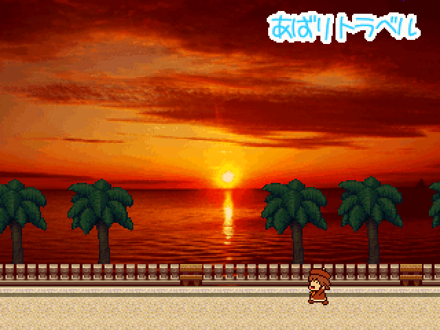

VIPRPG 2017夏の陣No12

画像にマウスオーバーでss2枚目が見れます。タッチデバイスの場合は画像タップで2枚目が見れます。1枚目に戻りたい時はココをタップして下さい。
【作者名】椎名
【ジャンル】短編やるゲ
【使用ツクール】2000
【配信/動画】可/可
【投票】可
【作者コメント】
アースバリア（あばり）ちゃんが夏休みをもらったので、
旅行に行ってはしゃいだり、友達と遊んだりして楽しそうにしてるのを見るだけのゲームです。
やるゲの体裁をとってはいますが、ゲーム要素は薄めでほぼ見るゲです。
プレイ時間は小1時間ほどになります。
祭り初参加です。よろしくお願いします。
アースバリア（あばり）ちゃんが夏休みをもらったので、
旅行に行ってはしゃいだり、友達と遊んだりして楽しそうにしてるのを見るだけのゲームです。
やるゲの体裁をとってはいますが、ゲーム要素は薄めでほぼ見るゲです。
プレイ時間は小1時間ほどになります。
祭り初参加です。よろしくお願いします。
【管理人コメント】
私も旅がしたい でも暑いから外出たくない
最新版:sum17_12_04.zip
私も旅がしたい でも暑いから外出たくない
最新版:sum17_12_04.zip
No12 あばりトラベル
*書き込みは感想掲示板(外部サイト)から
*書き込みは感想掲示板(外部サイト)から
2:名無しさん 2017/07/19(水) 17:27:11 ID:
もしもワールドの夏休みってどんな感じなんでしょう？
期待してます
3:名無しさん 2017/08/20(日) 11:31:06 ID:IKaImIgs0
めっちゃ良かった！
途中で謎解きっぽいのあったみたいだけどその前にわてりの所に行ったら…
おまけ部屋で気づいたけどこれいくつか分岐あったんですね…ｗ
まさかあそこにも分岐あったりとかこういうのも嫌いじゃないですｗ
4:名無しさん 2017/08/20(日) 11:57:43 ID:kdH504oc0
キャラクターが屋根に嵌って動かせないぞな
5:名無しさん 2017/08/20(日) 12:14:47 ID:kdH504oc0
あ、普通にOPを見たら動かせた
OPカットで始めると開始位置がおかしいだけだった
6:名無しさん 2017/08/20(日) 12:37:01 ID:/w52uZTY0
バグ？報告：バーに入ったら「実装されていません」で強制終了しました。
7:名無しさん 2017/08/20(日) 12:38:30 ID:mtlxbFvk0
>>5
申し訳ありません！
ttps://ux.getuploader.com/Vipsum_p/download/12
修正パッチを用意したのであてて頂ければと思います
作品ページも修正版の申請をしておきます
8:名無しさん 2017/08/20(日) 13:00:35 ID:mtlxbFvk0
>>6
環境依存の現象っぽく、こちらでは確認できていません…
ググった感じ、MP3関連であることはわかったので、
ttps://ux.getuploader.com/Vipsum_p/download/13
MP3をWavに変換してMP3に再変換したファイルを置いてみます。
効果があるかはわかりませんが…
9:名無しさん 2017/08/20(日) 13:40:17 ID:/w52uZTY0
>>7 ＞＞８
ありがとうございます。
10:名無しさん 2017/08/20(日) 20:45:19 ID:NXjHTUWw0
一週目からアイテムによって会話が変わる場所を全部見てクリアしました、これは追加要素が楽しみですね…
11:名無しさん 2017/08/20(日) 20:55:42 ID:U1gtWUzY0
OPの質が高い！わてりとあばりの軽快な会話が見てて楽しい
12:名無しさん 2017/08/21(月) 00:15:11 ID:kdH504oc0
夏の陣に相応しい一夏のバカンス気分の味わえる良いゲームだった
13:名無しさん 2017/08/21(月) 00:38:10 ID:Tf3Ki3UI0
旅行の雰囲気が良い感じに出てて良かった
14:名無しさん 2017/08/21(月) 00:54:38 ID:fSnB9dGI0
初心者なのか！雰囲気がとてもよかった…
夏にどこか行ったわけではない自分でも旅行したような気分になれたぜ
具現化同士の掛け合いもくど過ぎず好みです
カレー屋のカウンターの上走れるのは仕様なのかな、面白かったからいいけど
15:名無しさん 2017/08/21(月) 20:28:39 ID:JLsKkEbc0
まだ途中だけど
１：カレー屋のカウンターの上を歩ける
２：遺跡の問題、なんで「・」抜いた6文字になってるの？
16:名無しさん 2017/08/21(月) 20:41:02 ID:JLsKkEbc0
３：帰りの港、入口の2マス下に見えない壁がある
お話は良かったと思うよ
17:名無しさん 2017/08/21(月) 23:47:03 ID:YB6lG7rQ0
前編かなり楽しかったです。
導入の夕陽のドライブ超カッコイイ！
18:作者 2017/08/22(火) 23:59:46 ID:mtlxbFvk0
プレイして頂きありがとうございます。
暖かい感想の数々、本当に嬉しいです。
いくつか上がっていた不具合の修正と、
あとオマケ部屋の内容追加パッチをアップしました。
ttps://ux.getuploader.com/vipsum_p/download/20
>>15
「・」抜きなのは名前入力欄の文字数制限です…
19:名無しさん 2017/08/23(水) 00:24:41 ID:L5LtFRRI0
>>18
それなら看板とかも「・」抜いたらどうかな？
解けないわけじゃないけど不必要な引っかかりだと思うんだ
20:名無しさん 2017/08/23(水) 22:39:29 ID:j/Qtl9z20
雰囲気が素晴らしかった
なぜか南風GOGO！！！なんて言っちゃうのやっぱり面白い
こういう不思議でやさしい世界は好き
ネガティブな感じがほとんどなかったのもよかったし、丁寧な作りが伝わってきました
わてりもかわいかった
あと、私の作品の一部分が使われてたのが意外だったし
おまけ部屋でも作品名が書いてあったので嬉しかった
出会えてよかった作品です
21:名無しさん 2017/08/24(木) 20:17:13 ID:GI22/zeA0
最初ホテルのフロントへの電話のイベントの右を調べることができて
それでイベントを進めてしまうと途中で固まる
22:名無しさん 2017/08/24(木) 22:28:42 ID:J81cadvA0
楽しませてもらいました！
OPすごくいい感じだったよ！
全体的にいい雰囲気でしたので、
次回作も期待しています
23:名無しさん 2017/08/26(土) 08:25:57 ID:Mh5dwb6w0
夏の思い出って感じがしてとてもよかったです！
分岐あと２つ見つからなくてつらい・・・
24:作者 2017/08/27(日) 02:04:19 ID:mtlxbFvk0
プレイ、感想本当にありがとうございます。
毎度ご迷惑をおかけします。
不具合修正等のパッチを提出しました。たぶんこれで最後です。
ttps://ux.getuploader.com/vipsum_p/download/22
>>19
わかりにくくてすみませんが、雰囲気を重視しました……
出題時にも注意として事前に言ってあるので大丈夫かなと思いまして
>>21
ご報告ありがとうございます。修正致しました。
>>23
今回のパッチでクリア後に分岐のヒント等を聞けるようにしましたので、よければご活用ください。
25:名無しさん 2017/08/28(月) 21:28:14 ID:KEhs3msw0
ひと夏のホリディを感じさせる良い南国ゲでした
地味バリアがなんか地味に主役＆出演率の高いような今回の祭り
いろんな設定を昇華して自分の世界観に落とし込んでいるのがいいね
活動的でバイタリティ溢れるアースバリアかわいかった
26:名無しさん 2017/08/29(火) 00:28:39 ID:NaN/sprs0
全体的に雰囲気やキャラ造形がすごく良かった
南国に旅行行きたくなっちまったよ・・・
あばりかわいいよあばり
オープニングで「ん？もしやまじくそ・・・？」と感じたけどリスペクトだったんですね
27:名無しさん 2017/09/24(日) 22:22:34 ID:eECmZtmY0
ふいんきがよくて、南の島で旅行してる感じが体験できて良かった
キャラがみんなかわいい
28:作者 2017/09/30(土) 11:18:38 ID:mtlxbFvk0
更新版を提出しました。
主に細かい微修正と、本気で勘違いしていたハーナス部分の謝罪、
あと不要ファイルの削除があるので、
パッチではなく再DLにてセーブデータ移行でお願い致します。
更新しなくても特に問題はありません。
投票結果が公開されました。
はじめての作品で至らない点も多かったと思いますが、
この結果に驚いています。
遊んで頂いた皆様、本当にありがとうございました。
29:名無しさん 2017/12/06(水) 23:22:26 ID:WqWgZA5I0
演出のテンポというか、配分みたいなのが丁度良くてセンスを感じた
キャラも可愛い
朝食後のコーヒーは最高よな
30:名無しさん 2018/01/10(水) 22:46:04 ID:zW4G.3k.0
初作品とは思えないほどにマップが丁寧で歩いているだけで楽しい作品でした
何か大きな事件が起きるというわけでもなくゆったりと進行していくので、ゆったりプレイできました
私もこんな感じの旅行をしてみたい！と思わせられる作品でした